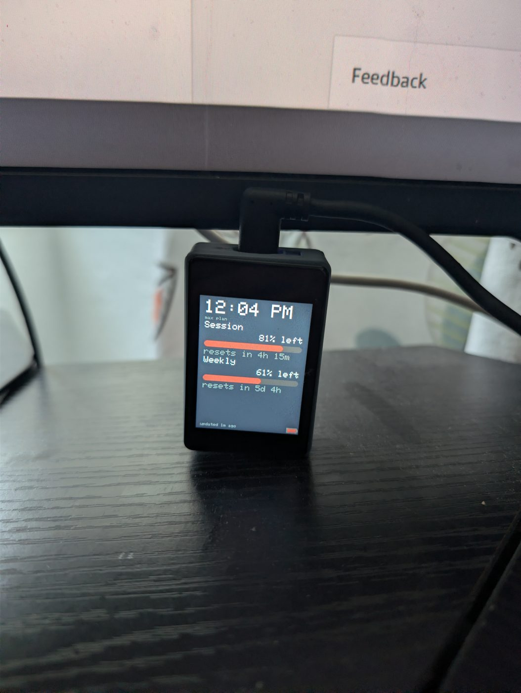

Yoyu
Your Claude usage, on your desk. Let's get it running.
Flash the board
Plug the board into your computer with a data USB-C cable (a charge-only cable won't work), then:
Send yourself the link and open it on a computer running Chrome or Edge. That's the only step that needs one — everything after it works from anywhere.
https://daveeuson.github.io/Yoyu/
Pick the board's port when asked, then Install. Takes about a minute.
The flasher didn't load. Reload the page, and if it still doesn't appear, see the troubleshooting guide.
Board not showing up?
Hold the BOOT button, tap RESET, release BOOT, then click Connect again. If there's still no port, try a different USB-C cable — most are charge-only.
Put it on your Wi-Fi
Right after it flashes, the same window offers “Connect to Wi-Fi.” Click it, pick your network, type the password once — it's sent to the board over the USB cable you already have plugged in. No hotspot, no app.
The board reboots and shows its address on screen.
Already flashed, but the board isn't on Wi-Fi?
A flashed board with no network to join puts up its own Wi-Fi instead.
From a phone or a laptop, join the network named
Yoyu-Setup (password headroom), open
http://192.168.4.1, and tap your home network from the
list. (That network only exists once step 1 is done — a board you
haven't flashed yet won't broadcast it.)
Feed it your usage
Run the little companion on the computer where you use Claude Code. It reads your existing login and sends usage to the board — no extra sign-in. Download it and open it; there's no installer to run:
Windows says “protected your PC”? macOS won't open it?
Expected — the companion isn't code-signed yet, so both systems warn on first launch. On Windows, click More info → Run anyway. On macOS, right-click the download and choose Open instead of double-clicking. You only do this the first time.
It finds the board on your network automatically. Within a minute or two the meters go live.
claude once on this computer to sign in
(check with claude /usage); the companion should then print
[LIVE], not [estimated].
It didn't find the board?
First, check they're on the same Wi-Fi — the board and this computer have to be on the same network, not a guest network, and not behind a VPN. That's the usual cause.
If they are and it still can't find it, the troubleshooting guide covers pointing the companion straight at the address from step 2. Otherwise just leave the companion running — it sets itself to start with your computer, so the meters stay fresh.

This is what you're aiming at.